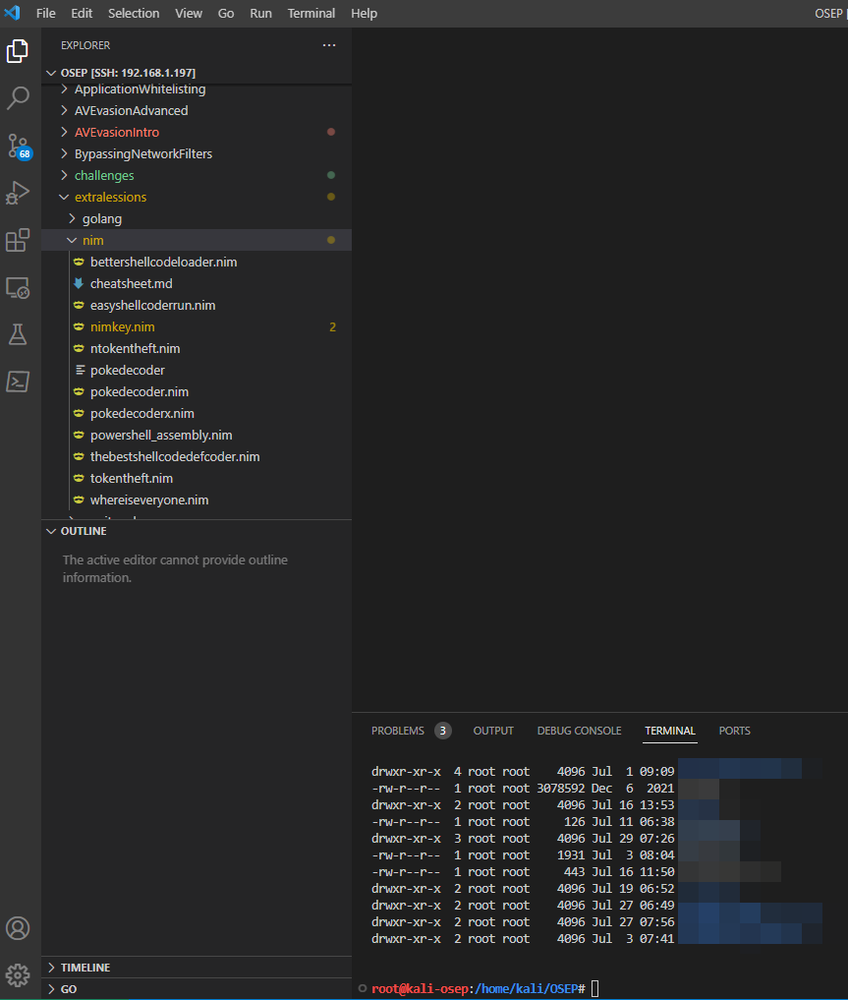
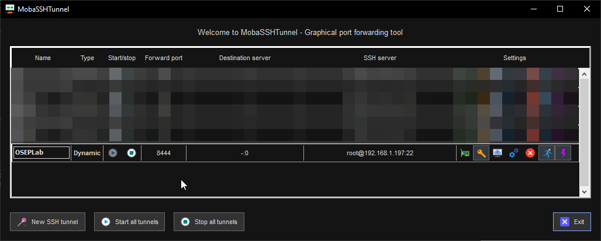
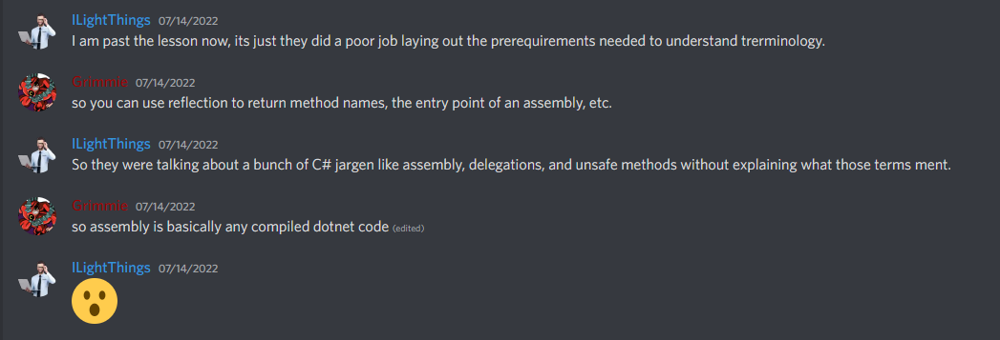
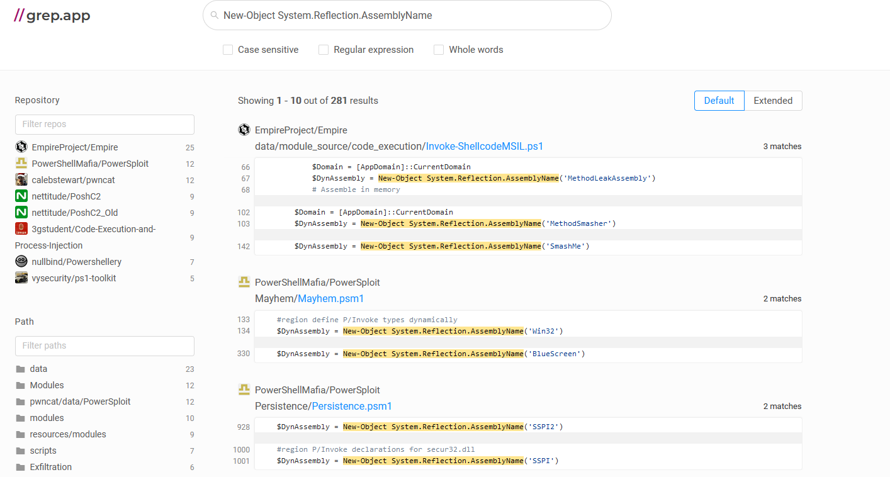
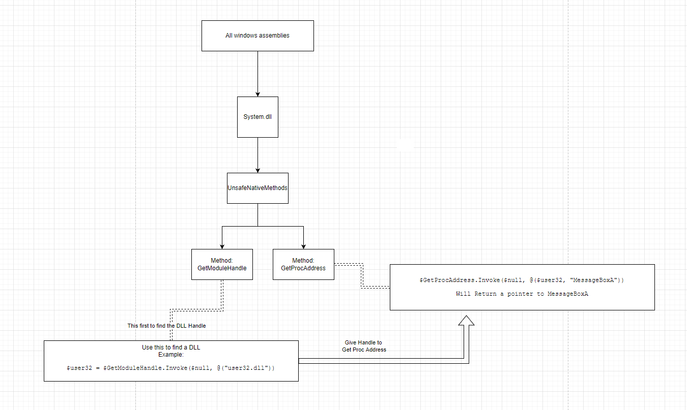
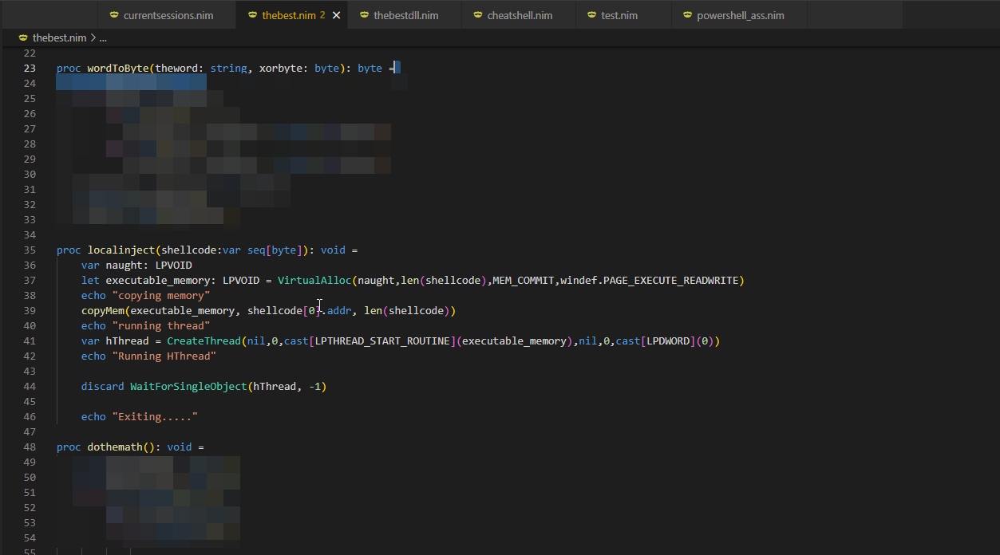
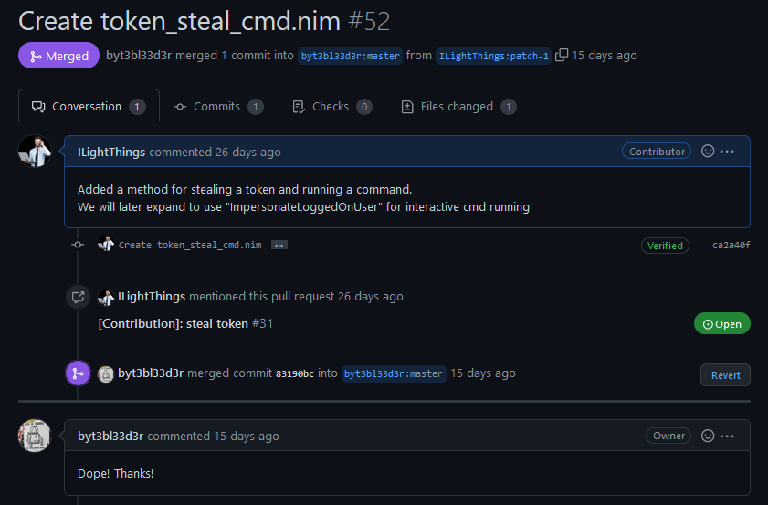
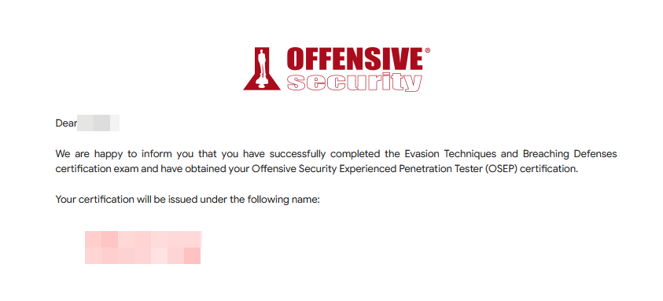
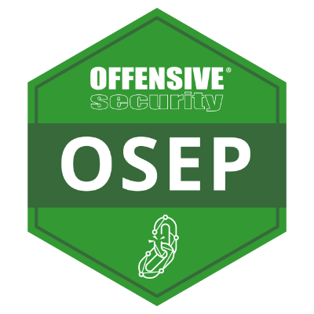

OSEP a Victory
So I just recently passed the PEN-300 course and got my OSEP. It was a truly fun but difficult journey. I wanted to briefly write a few things down before I forget them in hopes that they might help someone in the future.
The Timeline
So, I will admit fault here; I slacked off for a bunch of months. I bought the course back in January and had a year-long access pass. I initially dove into the material but as soon as I hit the .NET section, I was struggling hard. It was pretty demoralizing, as I was reading it over and over and just not getting it. I was going on and off for a few months until I finally decided that if I scheduled the exam, it would help me refocus myself to get through the painful sections of the material.
So July 1st hits, I re-setup my dedicated kali machine for the OSEP, and I start going through the material.
I set my exam to be on August 17th, which gives me 47 days to go from start to finish.
The Setup
My setup was pretty simple.
-
I have a dedicated kali machine on my ESXI server.
-
I would access it via SSH and using Visual Studio Code (SSH from my windows host) so I could edit my scripts and keep them safe from windows defender.
- 
-
Running commands, I would use MobaXterm as it would keep a log of my console output, provide a means of file transfer, and allow socks proxying for the web browser.
- 
-
If I needed to RDP into a windows lab host, MobaXterm allows for SSH network proxying, and I used that to RDP into offsecs environment. This allows me to copy and paste things right into the RDP session with little hassle.
-
For note storage, I setup the OSEP folder to sync with a private repositiory.
-
This is also the host I used for my OSEP exam.

Just a small note, I hate using the kali desktop environment I find it clunky, oobnoxious and there are always so many issues with openvm tools. Using everything over SSH made everything alot smoother.
C#, Powershell, and .NET - A struggling student
My biggest issue with the course came from the heavy focus on using .NET and CSharp. I don’t think I would have had as much of an issue, but they kept introducing terminology and wouldn’t spend much time explaining what they ment. After reading the chapter over any over, I still had no idea what a namespace was, how classes were referred to, what an Add-type complimation was about, or that assemblies were just compiled .NET code. I was very fortunate to have a friend help me with a few questions.
Thank you to @Grimme and his expertise on .NET. Check his work at https://grimmie.net/. There was a good chance that this was explained well somewhere, but I just could not make heads or tails of it.

Another huge help was grep.app. For every code snippet that I did not understand, I was able to find out other projects that were using identical bits of code and learn how they implemented them.

This did help alot when it came to supplemental training. Using grep.app helped me fully understand that some of the code Offsec was using, was purely for demonstration purposes, and which actually came in use. Example above is a screenshot of different uses of New-Object System.Reflection.AssemblyName.
If I am being honest, flow charts would have been a huge help for this kind of thing and I found myself building my own to help fully understand the topics. 
Overall, although the content for C#/.NET/Powershell was thorough, I could not keep a firm grasp on a lot of it because of lack of prior knowledge.
Win32API and Malware Evasion - A fan favourite
I really enjoyed this section, although it falls trap to the previous issue of having a lot of things done in C#/.NET. I added this section because it was a personal favourite of mine.
So in my first go around, I didn’t learn much. I realized that I was just copying and typing down the exact commands from exercisessies without fully knowing what I was typing.
The real progress start when I was listening to a friend talk about his red team engagements, and his language of choice was Nim. Nim is reasonably new and I am not going to get into it much, but he focuses on the fact that calling WinAPI32 was a breeze. So I started rewriting my exercises in this section in Nim and boom. I started to really understand what each of the calls I was making, was actually doing. I understood what a handle was and started to make more advanced changes to the malware development stage of the PEN-300.

I even took what I was learning in the course, and [contributed](Create token_steal_cmd.nim by ILightThings · Pull Request #52 · byt3bl33d3r/OffensiveNim · GitHub) back to the [offensive nim repo on github](GitHub - byt3bl33d3r/OffensiveNim: My experiments in weaponizing Nim (https://nim-lang.org/)).

But besides that, I was inspired to build my own shellcode encoder that wouldn’t get picked up by antivirus or EDR on static inspection. I think I might make another post about the specifics about it. But regardless, of the malware, paired with both nim, and the custom-written encoder, this section was a lot of fun to work with.
The Exam
Alright, so the exam. Obviously, I can not give a lot of details, but I think it brought the fun back in taking exams. Unlike the OSCP, I felt that the 48-hour time limit that they gave you was enough and the flow of the exam easily resembled an attack chain that I would see working on real engagements. A real overall improvement over taking the OSCP exam.
There were 2 attack paths that did get me stumped for about 7-9 hours total. One was complete my fault for not trying something very basic, and the other was just a completely foreign concept that was taught, just not in the context that was given to me. Kinda like being taught how a car engine works, repairing, diagnosing, and then for the exam, they throw you at a motorcycle engine. Doable, but a lot more effort and research is required.
What I still slightly resent the 24-hour turnaround time after the exam for the report. I didn’t personally feel great about the report I wrote. I was sleep deprived, my report didn’t follow what I would normally write for clients. It was strictly:
-
Show us the code you wrote for any programs you use
-
Show us the steps you took, that if we were to follow, would get the same result.
-
Show us the flags and screenshots of the flags.
There are two ways of getting the certification. Get 100 points from the flags on the network, or get to secret.txt. I ended up getting to secret.txt in my 28th hour.
Result
After submitting my report at hour 22 after the exam, I got my pass notification 44 hours later. Which is a pretty considerable turnaround time.

Over all, I would recommend the OSEP to anyone looking to specialize in windows active directory. It was a lot more focused and forgiving then the OSCP.

Support and Thank you
I just wanted to thank a small group of people.
-
Sam - For helping me with the linux shellcode generation exercise
-
Grimme - For helping me understand .NET and all the confusing terms.
-
Duc - A great coworker who help me stay sane when tackling the challenge labs
-
The people in the offsec discord. General nonsense those people are.
-
Em - Listening to my rambles and being a moral support.
Thank you……